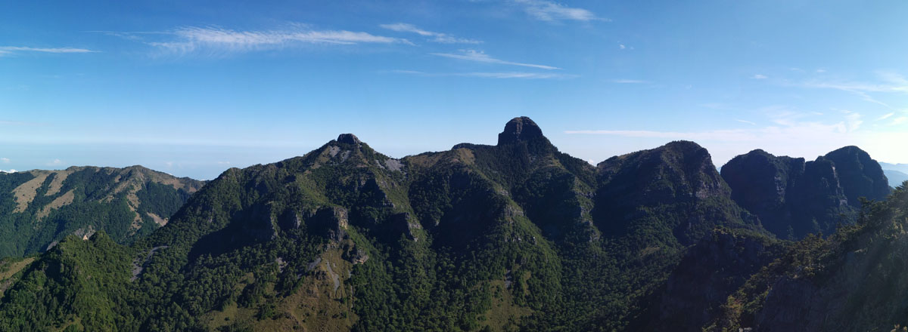
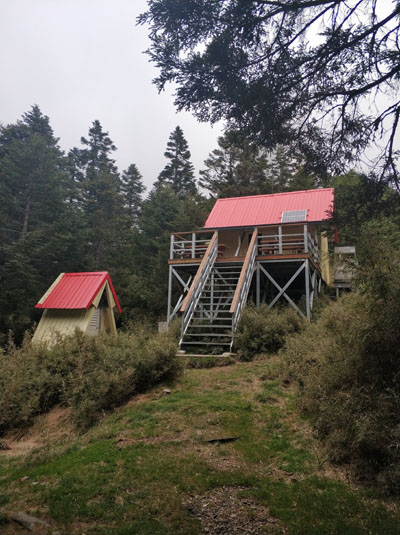
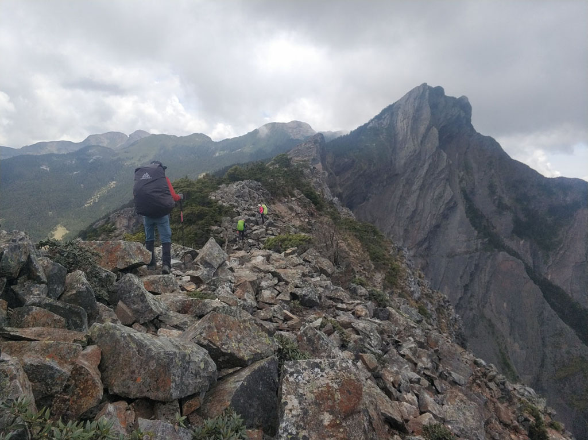
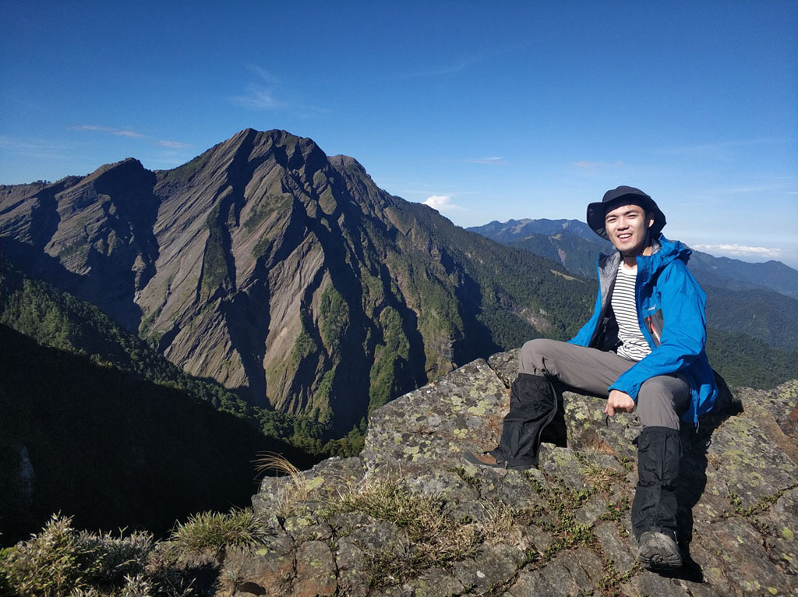
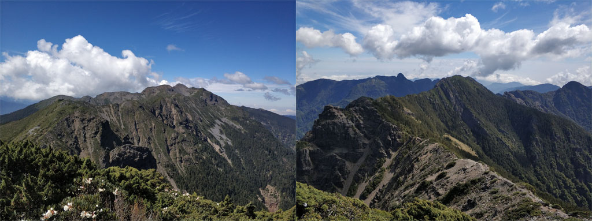

時間 :
2018.05.18 ~ 2018.05.22
隊員 :
Norman, Bella, Lisa, Kent
路線
Day 1 : 鹿林道東線0K→馬達拉溪登山口→馬達拉溪登山口宿營地
Day 2 : 馬達拉溪登山口宿營地→九九山莊→加利山→伊澤山→中霸山屋→大霸尖山→小霸尖山→大霸尖山→霸南山屋
Day 3 : 霸南山屋→巴紗拉雲山→布秀蘭山→素密達山→素密達山屋
Day 4 : 素密達山屋→雪山北峰→雪北山屋→鞍部叉路→凱蘭特崑山→北稜角→雪山主峰→三六九山莊
Day 5 : 三六九山莊→雪山東峰→七卡山莊→雪山登山口
原本在2017年中的時候，就挑戰過一次了，但那次嚴重低估負重對於長途縱走體能上的影響，所以就挑戰失敗了。
今年四個隊友講好，要嚴謹地管制各個團員的負重狀況，所以我們的重量大概都是控制在13~15KG之間，很多廢物爽物真的要直接放棄了~~
非常慶幸老天爺這次太給力，五天大晴天助我們完成這段聖稜線。
攀登特色
霸南山屋
一離開大霸尖山後，就會明顯感覺到開始要進入另一個世界，走這一條路的人並不多，我們一直到第四天雪北山屋後才遇見其他人。這一條路線下切得非常深，其實並不好走，一整天走大小霸後再接著這一段，對膝蓋腳踝的負擔也是不小。好處是，山屋都是包棟住的，我也特別喜歡這個很有特色的山屋。

素密達斷崖
素密達斷崖一直都知道是聖稜線路段的大魔王，在行前就一直不停看麥哥的MIT台灣誌不停預習素密達路段的紀錄，但真正走到後，發現上坡比下坡還辛苦阿，側邊過於裸漏造成我不少的行走壓力。反而是那三段斷崖讓我覺得還好(也有可能是腿長的關係，腿比較短的可能會很驚險)。

穆特勒布峰
這一座的山型真的是帥到炸阿，它絕對比一半以上的百岳都還有特色，只是不知道為什麼，竟然沒有入選百岳之中。然後三角點位置非常危險，就離斷崖不到100公分處。從穆特勒布眺望品田山的山型也是很帥。

雪山北峰
第四天的雪山北峰根本就是整條聖稜線的重頭戲，往南看，可以一路沿著稜線看到雪山主峰，往北看就是一路沿著稜線看著大小霸尖山，展望以及視野應該是聖稜線最精彩的景色。尤其走到這個時候，回頭望著大小霸尖山，感觸特別深阿~~

北稜角
最後一段要衝上北稜角的時候，風非常的大，
整體心得
以前剛開始爬百岳的時候，總是從其他山頭遠眺這條稜線。問了其他登山前輩 “台灣哪一條百岳登山路線最美?” 10個有8個都會回答聖稜線。經過這次後，我大概也會回答
“聖稜線是台灣最值得挑戰的百岳路線!!!“